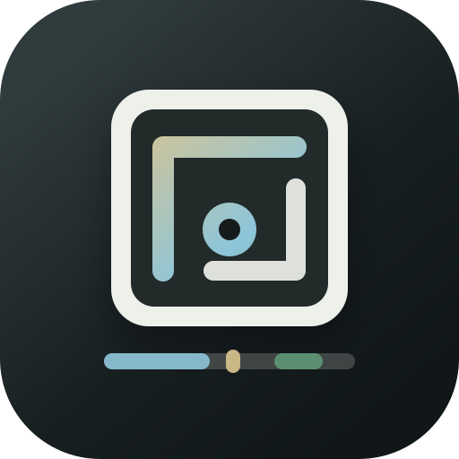
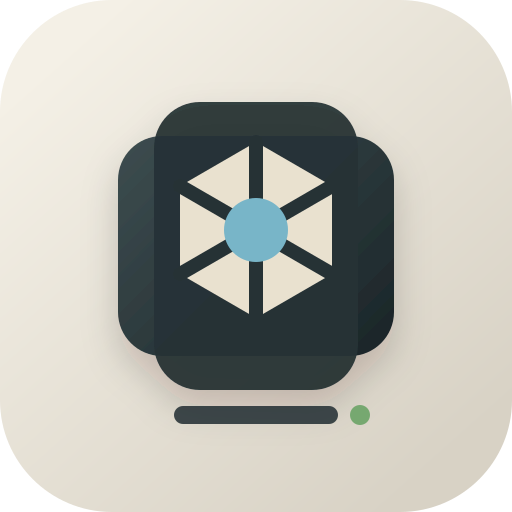
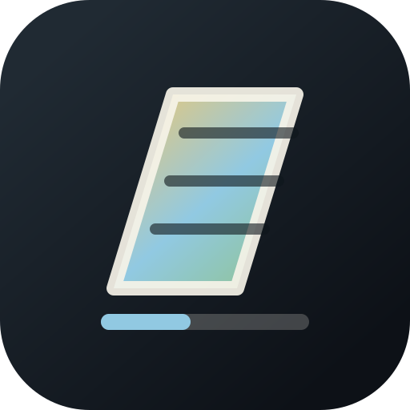
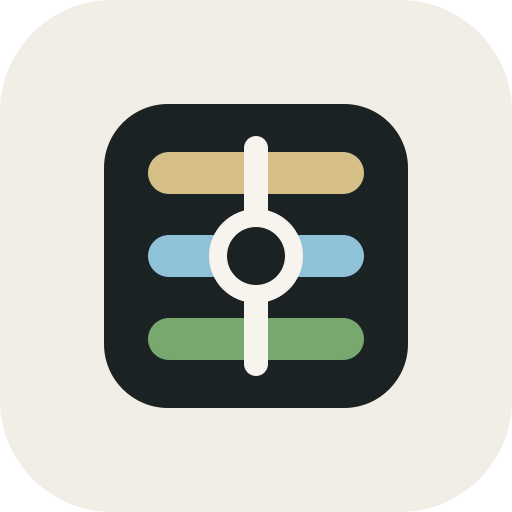

FoxCull Icon Options
Modern minimalist directions without fox, skull, pig, or Codex references.

02 Aperture Stack
Warm, photographic, softer.
03 Prism Cut
Sharper edit/crop identity.
Modern minimalist directions without fox, skull, pig, or Codex references.



